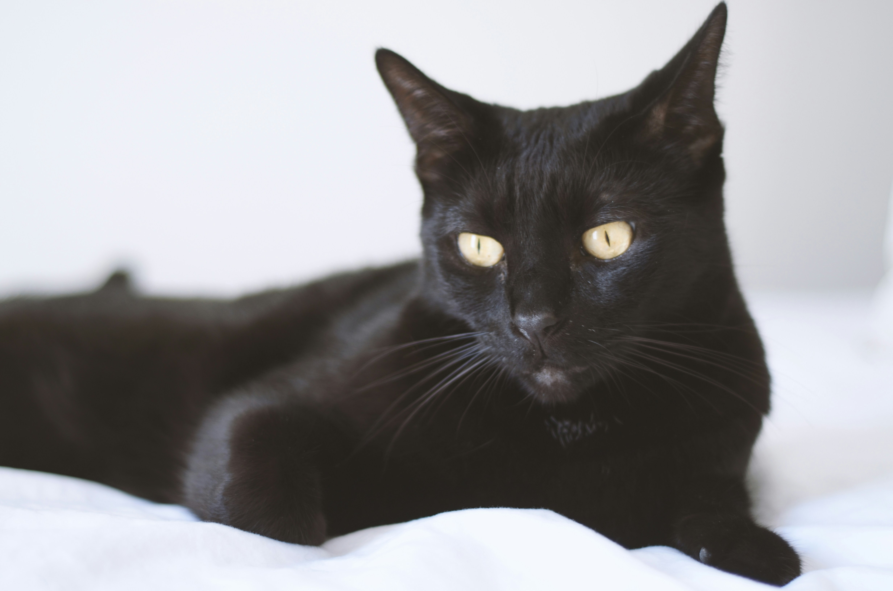

Bombay

Photo by Alexander Raissis on Unsplash
History
The Bombay cat breed was developed in the 1950s by a breeder named Nikki Horner. She wanted to create a cat that resembled a miniature black panther. To achieve this, she crossed a sable Burmese with a black American Shorthair. The result was the Bombay cat, which has a sleek black coat and striking copper or gold eyes. The breed was recognized by The International Cat Association in 1976 and by the Cat Fanciers' Association in 1985.
Appearance and Temperament
The Bombay cat has a sleek, short coat that is sleek black. Their eyes are typically copper or gold in color. They are a medium-sized, sturdy breed with a friendly and affectionate temperament. They are known for being social and enjoy being around people. They are also intelligent and can be trained to do tricks or use a litter box. They are generally good with children and other pets, making them a popular choice for families.
Source: https://cats.com/cat-breeds/bombay
Back to previous page